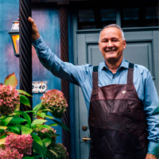
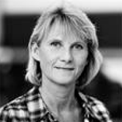

Nicoline Anastasia Jespersen Sørensen
Hej og velkommen til min portfolio! Jeg hedder Nicoline, og det er en fornøjelse at have dig her.
Når jeg ikke er dybt fordybet i mine studier, finder du mig ofte med
næsen begravet i en god bog eller ude i naturen, hvor jeg kan lade tankerne
flyve frit. Familietid er også noget, jeg sætter stor pris på og prioriterer højt
Ud over at jonglere med mine akademiske forpligtelser har jeg været aktiv
som medlem af elevrådet, hvor jeg har haft mulighed for at give min stemme
til gode ideer og initiativer. Jeg har også fungeret som studenterambassadør
og tutor på EAAA, hvor jeg har nydt at dele min viden og erfaring med andre studerende.
På den professionelle front har jeg haft fornøjelsen af at arbejde som
receptionist på Boutique Hotel Villa Provence i løbet af de sidste 2 år.
Her har jeg haft mulighed for at udvikle mine kommunikationsfærdigheder og
evnen til at håndtere forskellige situationer med et smil på læben.
Jeg glæder mig til at dele mere om mine erfaringer og projekter med dig her på min portfolio!
Skills
Faglige kompetancer
Personlige egenskaber
Problemløsning
Selvstændighed
Gruppearbejsevener
Kreativitet
Tidsstyring
Organisering
Formidlingsevner
Udtagelser
Peter C. Bühlmann Jensen
Hotelvært hos Alpeffect Hotels Austria
Nicoline har været en fremragende tilføjelse til vores team. Hendes bemærkelsesværdige
evne til at støtte kollegaer og imødekomme gæster skaber en positiv atmosfære.
Hendes samarbejdsvilje og professionalisme bidrager betydeligt til et godt arbejdsmiljø
og tilfredse gæster. Nicoline er altid villig til at træde til og hjælpe, og hendes
dedikation og engagement er tydelige. Vi sætter stor pris på hendes indsats, og det er
en fornøjelse at have hende med os på holdet.
Birgitte Iversen
Lektor hos EAAA

Vi er rigtig glade for at have Nicoline som studerende på Multimediedesign. Nicoline har en solid forståelse og
udviser stor interesse for faget, hvilket altid afspejles i hendes arbejde og projekter på studiet. Nicoline møder
altid med et stort engagement, hvilket bidrager til gode præstationer, og hun er ikke bange for at stille spørgsmål –
det er en god evne. Nicoline kan arbejde i dybden, hvilket resulterer i kvalitetsarbejde. Hun er også en målrettet
studerende, der kan inspirere andre.
Sidst har Nicoline været tutor for et nyt hold studerende. Det kræver,
at man kan gå forrest og udvise mod og selvstændighed.
Pernille Dieckmann
Ambassadør kordinator
Nicoline har både været ude med ’Det kørende akademi’ som underviser og været medpå uddannelsesmesser som
vores ansigt udadtil. Nicoline er en dygtig formidler og tager altid imod vores gæster med et smil.
Hun er velforberedt og altid med på at give en hånd med, når der mangler.
Nicolines arbejde som brobygningsambassadør har været mere end fyldestgørende, og jeg vil til hver
en tid tage Nicoline med ud som ambassadør for Erhvervsakademi Aarhus igen.